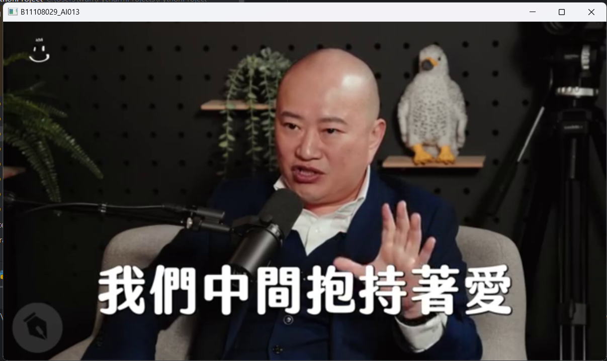

PROGRAMMING PROJECT / AI013
YouTube 串流播放 × OpenCV
結合 yt_dlp 與 OpenCV，將 YouTube 網路影片轉換為即時影像來源， 展示串流擷取與影像處理的基礎應用。
專案資訊
功能簡介
這個專案展示如何結合 yt_dlp 與 OpenCV， 擷取 YouTube 串流影片並進行即時顯示。 透過這種整合，使用者能將網路影片視為即時影像來源， 進一步應用於 AI 模型訓練或影像分析。
介面截圖

程式碼片段
AI013｜直接串流播放 YouTube 影片
import cv2
import yt_dlp
video_url = "https://www.youtube.com/watch?v=z_fY1pj1VBw"
ydl_opts = {'format': 'best', 'quiet': True}
with yt_dlp.YoutubeDL(ydl_opts) as ydl:
info_dict = ydl.extract_info(video_url, download=False)
stream_url = info_dict['url']
cap = cv2.VideoCapture(stream_url)
while cap.isOpened():
ret, frame = cap.read()
frame = cv2.resize(frame, (960, 540))
cv2.imshow('Stream', frame)
if cv2.waitKey(1) & 0xFF == 27:
break
cap.release()
cv2.destroyAllWindows()